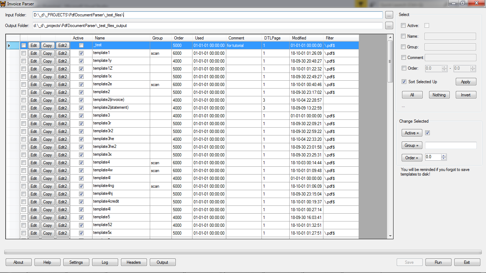

Invoice Parser
Overview
InvoiceParser is a custom desktop application based on PdfDocumentParser.
Generally, it does the following:
- enhances PdfDocumentParser::Template with some properties that are not related to parsing;
- keeps and manages templates;
- processes PDF files along the custom needs;

Assumptions
- a PDF file can contain only documents of the same type;
- once detected, a document is considered continued until next document begins or the file ends;
These assumptions is not something deep rooted in the code and can be easily modified.
Additional Template Parameters
| Parameter | Description |
|---|
| Active |
Inactive template is not ignored while parsing. |
| Group |
An optional mark that can be helpful for managing templates. |
| Order |
A weight indicating template's order in check line. It is intended to reduce processing time. Templates with the less order are tried first. |
| DTLPage |
The last page in PDF files that is to be checked for this template. It is intended to reduce processing time. |
| Filter |
It is a Regex applied to PDF file path to recognize the proper template. Optional. It is intended to reduce processing time. |
Considerations
When processing documents InvoiceParser applies every active template to every new document to recognize a proper template. So, if you have 50 templates and 1000 files evenly distributed for templates, InvoiceParser will do on average 1000/2 *50 = 25,000 template tries. It may take a considerable time especially with templates using OCR. You can decrease processing time by the following ways:
- specify file filters for templates. If it can be done then the tips below are not needed;
- specify template orders so that templates that require longer time for recognition have higher order. E.g. templates that use auto-deskew should be checked in the last place;
- keep templates that are known as not corresponding to the files to be processed right now, inactive so that PdfDocumentParser will have to choose the right templates from a lesser collection;
- as every template is checked for matching its recognition marks to document pages, avoid using OCR'ed text type in marks and their anchors because this type requires an essential time to build an OCR cache of page (being built it is very fast then). This tip makes sense only when the most of templates use Image type in marks which usually happens. Otherwise, if marks of the most of templates can use OCR'ed text then it may give a faster parsing;